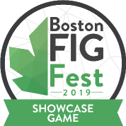

Floaty Fighters
Released: December 6th 2019
Genre: Fighting
Created by: Shattered Journal Games
Role: Producer/Programmer/Designer
Engine: Unity
Team Size: 4
Game Description
Floaty Fighters is a free-movement fighting game with a focus on projectile attacks. Each character has a unique playstyle where each character has four base moves, and they all work in tandem with each other. Being able to maximize the potential of your fighter is the key to the game.
My Experience
Floaty Fighters is my passion project, and it was made with a strong base of my strengths as a game dev: single screen games, free movement, and multiplayer games. I started the game alone in April 2018, and in September started to form a team to help with Art. It has been in development for a year and a half, and since it's conception I've brought it to many game dev events and either hold mini-tournaments at it's booth, or have free for alls. I've brought it to PAX East, Boston FIG, Shine, Made in MA events, and many other events. By doing this, we've been building a small community with people who enjoy the game. We also have gotten tons of feedback on what people like about the game, what people don't, and what people want added to the game. I've had a blast working on this game and making it the best it can be.
Design
Floaty for most of its development had four characters: Alpha, Bunny, Cumulo, and Phoenix. These characters have changed dramatically since they were first made after extensive playtesting at events and character reworks. Since characters only have four moves each, each move has to do more than one thing. If a move only did one thing and couldn't synergize with another move, we'd combine it with a different move or buff it. Cumulo's moveset used to be shooting lightning at clouds to chain shots in between and being able to detonate their clouds, but this was really hard to actually hit. So we changed it so instead of detonation they could use wind to move all clouds on screen, and hitting a cloud with lightning still chained lightning, but now the clouds themselves became hitboxes for a bit. Sometimes moves just need a buff instead of total reworks though. Phoenix's explosion is a risky move because it makes you vulnerable after, and you have to get in close to land it. We made it so it also shoots four embers out to give it more use, and made it so you can dash cancel into it from both the Drill Dash and the short dash.
Data
We collect data about people play the game to have hard data about when making balancing decisions. For pre-release of the game, we collected data at Boston Playcrafting Halloween Expo. Here's a graph on start, wins, and loses for each character where we only did 1v1s:

Awards
